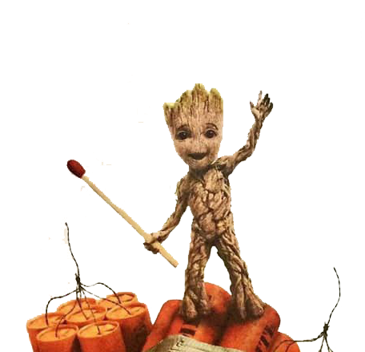
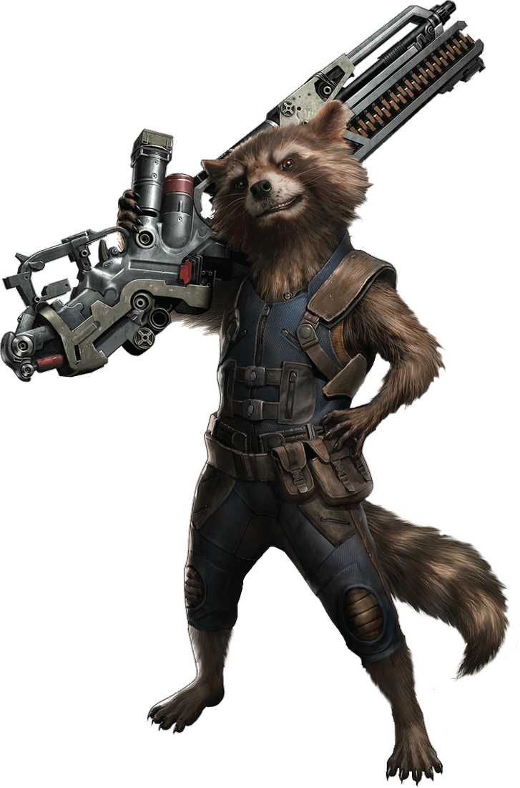

About Groot
He's member of a rare species of sentient tree-men. Technically, Groot is a Floral Colossus. While most Floral Colossi never venture from their home world, Groot travels the galaxy with his best friend and mercenary partner, Rocket Raccoon.
Characteristics
- He knows how to grow
- He's cute
- He's Groot
Groot's best Friend
About Rocket Racoon
Rocket Raccoon resurfaced as a member of the team chosen to accompany Star-Lord on his mission to stop a Phalanx infiltration of the Kree homeworld. Rocket is depicted as a gifted military tactician who is fearless, loyal, and insightful. It is heavily implied that he has a case of obsessive compulsive disorder. Rocket's trademark rocket skates are absent. Click on the link to know more about him Rocket Racoon.
